Tree
先前提到的資料結構如: Array, Linked List, Stack 和 Queue 都是屬於 Linear，而接下來介紹的 Tree 和 Graph 則是屬於 Non-Linear，Tree 又屬於 Graph 的其中一種; 對於一位前端工程師來說，Non-Linear 這種資料結構在開發上鮮少會運用到，但其實每天在接觸的 Dom ，其資料結構就是 Tree!
Tree
Tree 這種資料結構之所以會被這麼稱呼就是因為它的結構像是一棵倒過來的樹，是一種 Non-Linear、具有階層的的結構，在生活上，如公司組織圖、族譜和賽程表都是很類似的應用。

一個 Tree 是由許多 node (結點) 所組成，其資料結構會有以下特色:
- root: 代表最上面的根結點，每一個 Tree 只會有一個
- parent node: 有 child node 的結點，所以除了 leaf 都算是
- child node: 有 parent node 的都算是，所以只有 root 不算
- subtree: 由結點與其後代結點所組成
- leaf: 葉結點或外部結點，為沒有 child node 的結點
- depth: 結點的深度，代表該結點有幾層祖先結點，root depth 即為 0
- height: Tree 的高度，代表總共有幾層
Tree 無法包含循環結構(cycle)，也就是 child node 無法再指向回 parent node
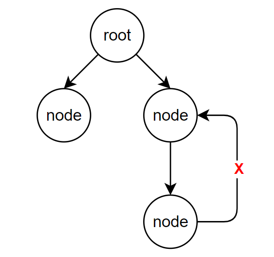
Node
一個 Node 會包含以下內容:
- value: 所代表的值
- children: 所指向的 child node
1 | class Node { |
Tree 的種類
Tree 有許多種類型，接下來將介紹幾種常見的類型
Binary Tree
Binary Tree 的定義是每個 node “最多”只能有 2 個 child node，所以下方左圖是 Binary Tree，而右圖則否
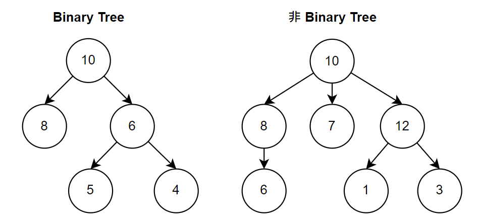
Binary Search Tree
Binary Search Tree 是 Binary Tree 的一種，同樣也有最多 2 個 child node 的規則，只是在 key 的部分多了一些規則如下:
- 左邊所有的 child node: key 會小於等於 parent node
- 右邊所有的 child node: key 會大於 parent node
所以結果會是 左邊所有的 child node <= parent node < 右邊所有的 child node
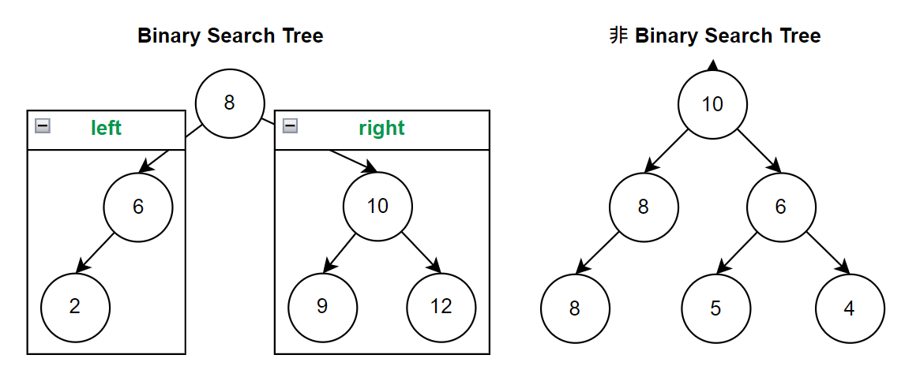
在 Binary Search Tree 中，每個結點最多只會有兩個子結點 (left and right)
1 | class BinarySearchTree { |
Insert
插入一個 node，其值會從 root 開始比較，如果小於 parent node，則從 left node 繼續比較，反之則從 right node 繼續比; 以新結點 4 來說，總共比較了 3 次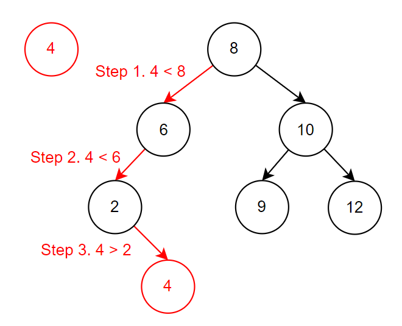
1
2
3
4
5
6
7
8
9
10
11
12
13
14
15
16
17insert(value) {
const newNode = new BinarySearchTree(value);
if (value <= this.value) {
if (!this.left) {
this.left = newNode;
} else {
this.left.insert(value);
}
} else {
if (!this.right) {
this.right = newNode;
} else {
this.right.insert(value);
}
}
}Min/Max
在 Binary Search Tree 中，最小的值一定會在最左邊，反之，最大的值會在最右邊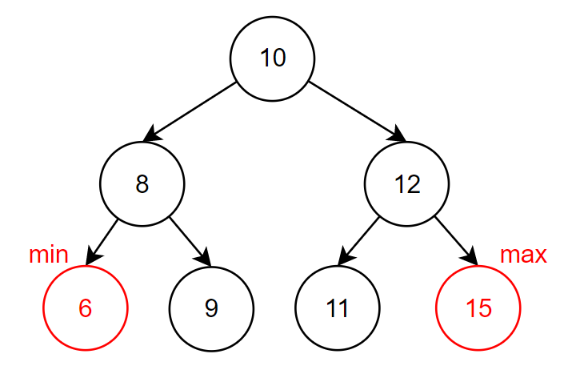
Balanced vs. Unbalanced Tree
Balanced Tree 指的並非是左右結點的高度相同(如果左右高度相同，總結點數勢必為奇數)，而是指包含一定程度排列，使的 insert 和 find 都可以在 O(log n) 的時間複雜度之內完成，經典的例子是紅黑樹(Red-black Trees) 和 AVL Trees。
Complete Binary Tree
所有結點都是由左到右依序被填滿的，所以如果只有右結點而沒有左結點，就不是一個 Complete Binary Tree，如下左圖是，右圖則否
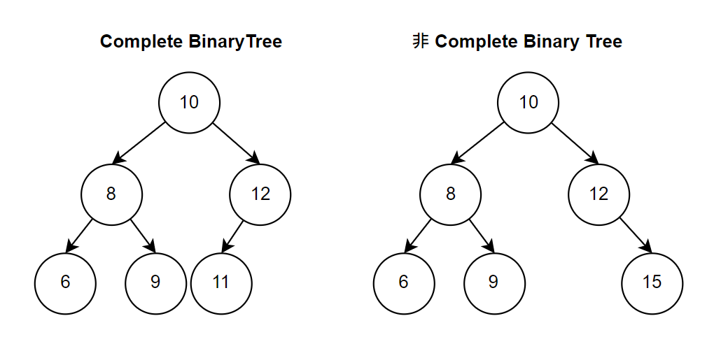
Full Binary Tree
代表所有結點都沒有子結點或包含兩個子結點，也就是不會只有一個子結點
Perfect Binary Tree
同時包含 Full 和 Complete Binary Tree 的特性，所以所有 leaf node 都會在同一個 level，總結點數會是 2^k - 1 個，k 代表 level 的數量，要特別注意的是，遇到 Binary Tree 相關題目時，不應該預設為 Perfect Tree，避免考量的不夠周全。
Binary Heap
Binary Heap 是 Complete Binary Tree 的其中一種，所以同樣也有最多兩個子結點和優先填寫左子結點的特性，但有相同父結點的子結點彼此並沒有潛藏的關聯性; 其中，又根據降冪和升冪排列分成 Min/Max Binary Heap，Min 的所有父結點都會小於子結點，所以 root 會有最小的值; 反之，Max 則會是大於。
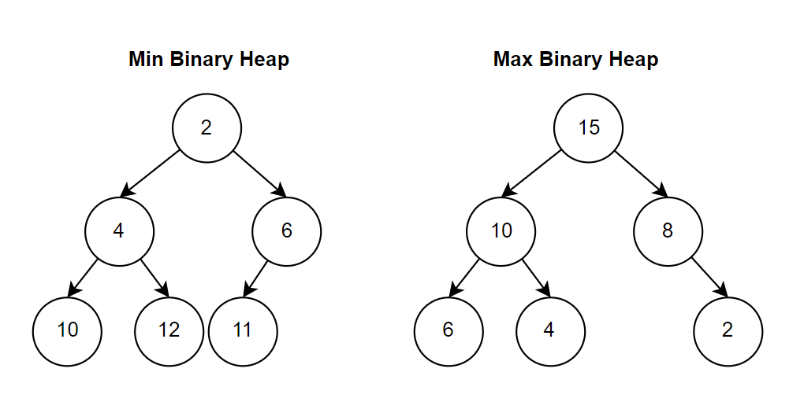
什麼時候需要使用 Binary Heap?
Binary Heap 通常會使用在 Priority Queues，那什麼又是 Priority Queues?
Queues 在先前的章節有介紹過，即是一種先進先出 (FIFO) 的資料結構，而 Priority Queues 顧名思義是每個結點又額外包含優先級 (priority) 的特性，所以在取出資料時 (dequeue)，可以優先取出高優先級的資料。
Method
以下方法都會先以 Min Binary Heap 為例
Insert
在插入一個結點後，會依序往上比較，如果子結點的值大於父結點，則兩者交換位置，直到子結點小於父結點為止，反之，Max 則是大於，時間複雜度為 O(log n)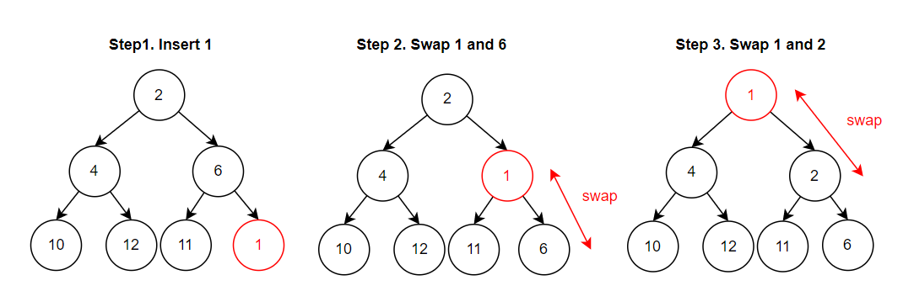
Remove (Deqeue)
移除一個最小值非常容易，因為它就是 root (高優先級)，重點是，移除之後，要由誰來遞補 root 的位置，時間複雜度為 O(log n)，會由以下幾個步驟來完成:- Step 1: 移除 root
- Step 2: 取最後一個結點替換到 root
- Step 3: 依序向下比較，如果父結點大於子結點，則兩者交換; 如果左右兩子結點皆符合條件，在 Min Binary Heap 中，則以”較小者”優先交換
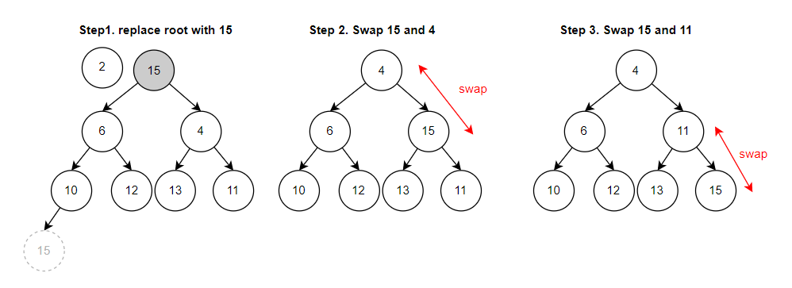
Traversal
在 Binary Tree 中，traversal 又分成以下 3 種:
In-Order Traversal
從底部開始，由左至右依序輸出，left -> self -> right，所以在 Binary Search Tree 中，會依序輸出由小至大的值，下圖中的數字代表執行順序
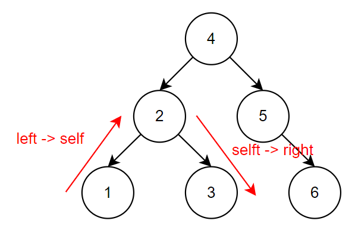
1 | inOrder(root) { |
Pre-Order Traversal
由上而下，再由左至右依序輸出，self -> left -> right; 所以在 Pre-Order 中，root 總會是造訪的起點，下圖中的數字代表執行順序
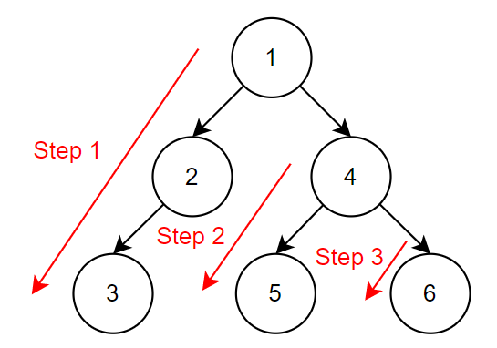
1 | preOrder(root) { |
Post-Order Traversal
由下而上，在由左至右依序輸出，left -> right -> self，下圖中的數字代表執行順序
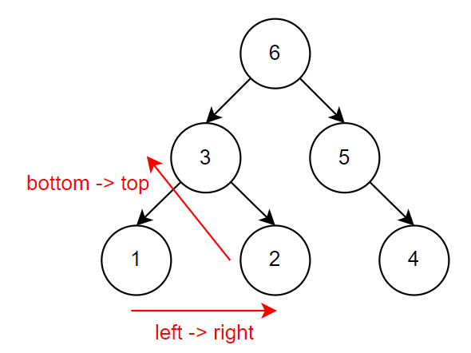
1 | postOrder(root) { |
Search
在搜尋上，又分成兩種，分別從廣度與深度著手搜尋
Depth First Search(DFS): 由左至右搜尋完一個 branch 後，才會跳至右側的 branch 繼續搜尋，下圖中的數字代表執行順序
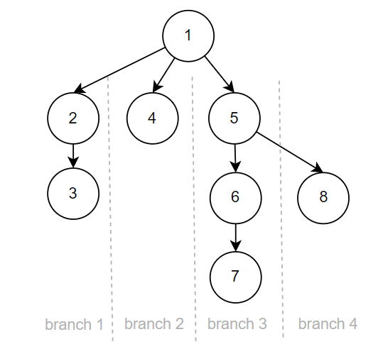
Breadth First Search(BFS): 由左至右搜尋完一個 level 後，才會跳至下一個 level 繼續搜尋，下圖中的數字代表執行順序
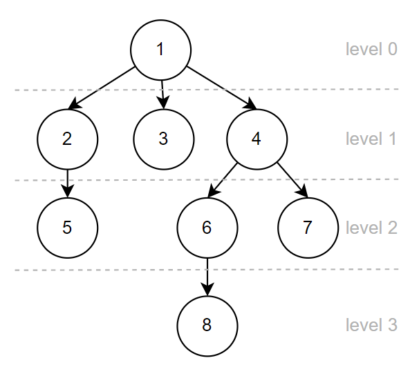
資料參考
Cracking the Coding Interview
Depth First & Tree Traversals (Pre, In, Post) Explained
[資料結構] Binary Search Tree
Binary Heaps in JavaScript